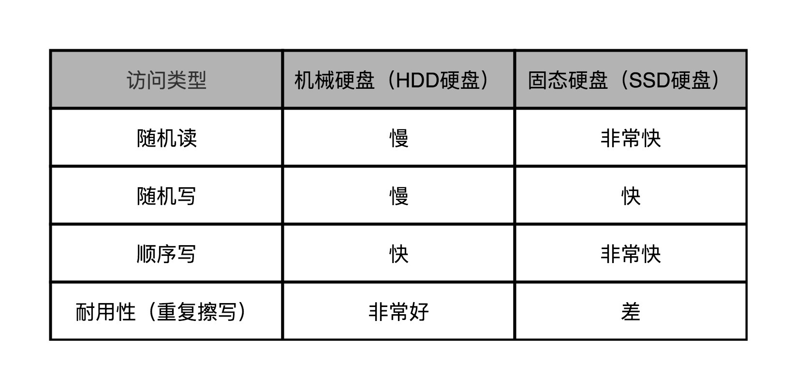
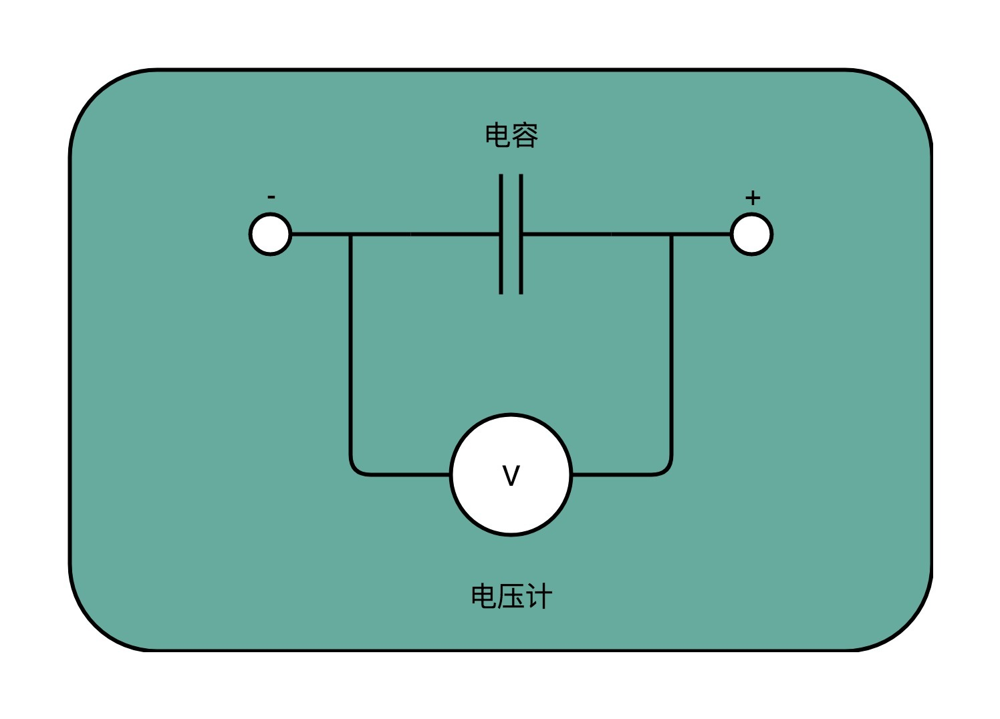
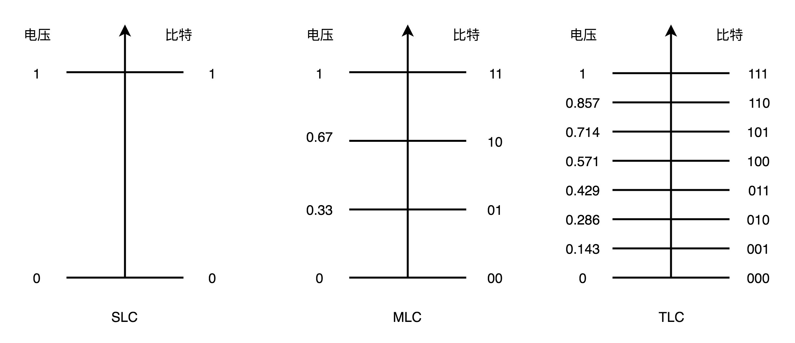
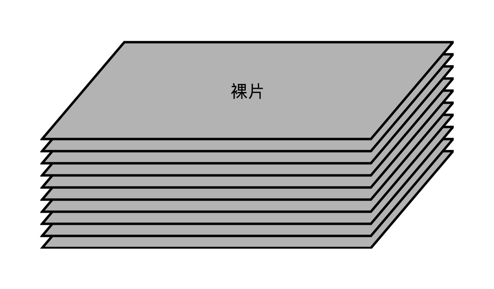
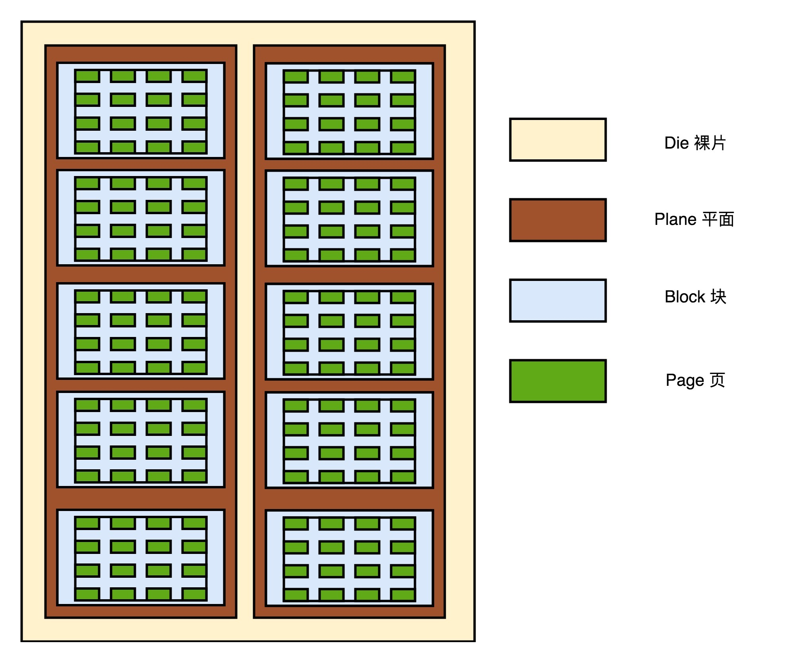
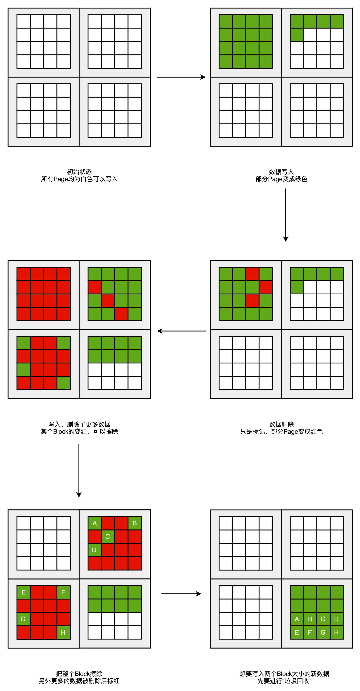
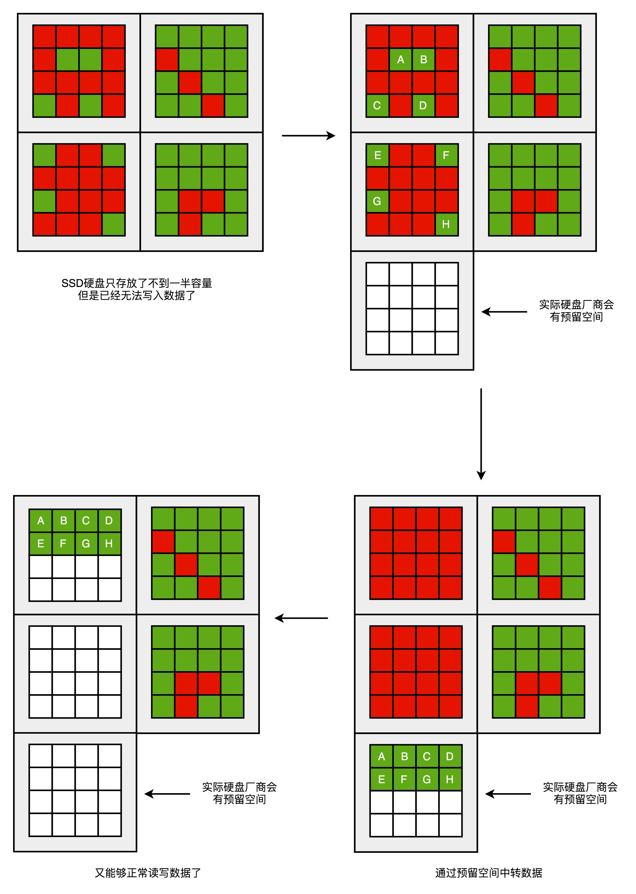

- 00 开篇词 为什么你需要学习计算机组成原理？.md.html
- 01 冯·诺依曼体系结构：计算机组成的金字塔.md.html
- 02 给你一张知识地图，计算机组成原理应该这么学.md.html
- 03 通过你的CPU主频，我们来谈谈“性能”究竟是什么？.md.html
- 04 穿越功耗墙，我们该从哪些方面提升“性能”？.md.html
- 05 计算机指令：让我们试试用纸带编程.md.html
- 06 指令跳转：原来if...else就是goto.md.html
- 07 函数调用：为什么会发生stack overflow？.md.html
- 08 ELF和静态链接：为什么程序无法同时在Linux和Windows下运行？.md.html
- 09 程序装载：“640K内存”真的不够用么？.md.html
- 10 动态链接：程序内部的“共享单车”.md.html
- 11 二进制编码：“手持两把锟斤拷，口中疾呼烫烫烫”？.md.html
- 12 理解电路：从电报机到门电路，我们如何做到“千里传信”？.md.html
- 13 加法器：如何像搭乐高一样搭电路（上）？.md.html
- 14 乘法器：如何像搭乐高一样搭电路（下）？.md.html
- 15 浮点数和定点数（上）：怎么用有限的Bit表示尽可能多的信息？.md.html
- 16 浮点数和定点数（下）：深入理解浮点数到底有什么用？.md.html
- 17 建立数据通路（上）：指令加运算=CPU.md.html
- 18 建立数据通路（中）：指令加运算=CPU.md.html
- 19 建立数据通路（下）：指令加运算=CPU.md.html
- 20 面向流水线的指令设计（上）：一心多用的现代CPU.md.html
- 21 面向流水线的指令设计（下）：奔腾4是怎么失败的？.md.html
- 22 冒险和预测（一）：hazard是“危”也是“机”.md.html
- 23 冒险和预测（二）：流水线里的接力赛.md.html
- 24 冒险和预测（三）：CPU里的“线程池”.md.html
- 25 冒险和预测（四）：今天下雨了，明天还会下雨么？.md.html
- 26 Superscalar和VLIW：如何让CPU的吞吐率超过1？.md.html
- 27 SIMD：如何加速矩阵乘法？.md.html
- 28 异常和中断：程序出错了怎么办？.md.html
- 29 CISC和RISC：为什么手机芯片都是ARM？.md.html
- 30 GPU（上）：为什么玩游戏需要使用GPU？.md.html
- 31 GPU（下）：为什么深度学习需要使用GPU？.md.html
- 32 FPGA、ASIC和TPU（上）：计算机体系结构的黄金时代.md.html
- 33 解读TPU：设计和拆解一块ASIC芯片.md.html
- 34 理解虚拟机：你在云上拿到的计算机是什么样的？.md.html
- 35 存储器层次结构全景：数据存储的大金字塔长什么样？.md.html
- 36 局部性原理：数据库性能跟不上，加个缓存就好了？.md.html
- 37 理解CPU Cache（上）：“4毫秒”究竟值多少钱？.md.html
- 38 高速缓存（下）：你确定你的数据更新了么？.md.html
- 39 MESI协议：如何让多核CPU的高速缓存保持一致？.md.html
- 40 理解内存（上）：虚拟内存和内存保护是什么？.md.html
- 41 理解内存（下）：解析TLB和内存保护.md.html
- 42 总线：计算机内部的高速公路.md.html
- 43 输入输出设备：我们并不是只能用灯泡显示“0”和“1”.md.html
- 44 理解IO_WAIT：IO性能到底是怎么回事儿？.md.html
- 45 机械硬盘：Google早期用过的“黑科技”.md.html
- 46 SSD硬盘（上）：如何完成性能优化的KPI？.md.html
- 47 SSD硬盘（下）：如何完成性能优化的KPI？.md.html
- 48 DMA：为什么Kafka这么快？.md.html
- 49 数据完整性（上）：硬件坏了怎么办？.md.html
- 50 数据完整性（下）：如何还原犯罪现场？.md.html
- 51 分布式计算：如果所有人的大脑都联网会怎样？.md.html
- 52 设计大型DMP系统（上）：MongoDB并不是什么灵丹妙药.md.html
- 53 设计大型DMP系统（下）：SSD拯救了所有的DBA.md.html
- 54 理解Disruptor（上）：带你体会CPU高速缓存的风驰电掣.md.html
- 55 理解Disruptor（下）：不需要换挡和踩刹车的CPU，有多快？.md.html
- 结束语 知也无涯，愿你也享受发现的乐趣.md.html
46 SSD硬盘（上）：如何完成性能优化的KPI？
随着 3D 垂直封装技术和 QLC 技术的出现，今年的“618”，SSD 硬盘的价格进一步大跳水，趁着这个机会，我把自己电脑上的仓库盘，从 HDD 换成了 SSD 硬盘。我的个人电脑彻底摆脱了机械硬盘。
随着智能手机的出现，互联网用户在 2008 年之后开始爆发性增长，大家在网上花的时间也越来越多。这也就意味着，隐藏在精美 App 和网页之后的服务端数据请求量，呈数量级的上升。
无论是用 10000 转的企业级机械硬盘，还是用 Short Stroking 这样的方式进一步提升 IOPS，HDD 硬盘已经满足不了我们的需求了。上面这些优化措施，无非就是，把 IOPS 从 100 提升到 300、500 也就到头了。
于是，SSD 硬盘在 2010 年前后，进入了主流的商业应用。我们在第 44 讲看过，一块普通的 SSD 硬盘，可以轻松支撑 10000 乃至 20000 的 IOPS。那个时候，不少互联网公司想要完成性能优化的 KPI，最后的解决方案都变成了换 SSD 的硬盘。如果这还不够，那就换上使用 PCI Express 接口的 SSD。
不过，只是简单地换一下 SSD 硬盘，真的最大限度地用好了 SSD 硬盘吗？另外，即便现在 SSD 硬盘很便宜了，大部分公司的批量数据处理系统，仍然在用传统的机械硬盘，这又是为什么呢？
那么接下来这两讲，就请你和我一起来看一看，SSD 硬盘的工作原理，以及怎么最大化利用 SSD 的工作原理，使得访问的速度最快，硬盘的使用寿命最长。
SSD 的读写原理
SSD 没有像机械硬盘那样的寻道过程，所以它的随机读写都更快。我在下面列了一个表格，对比了一下 SSD 和机械硬盘的优缺点。

你会发现，不管是机械硬盘不擅长的随机读写，还是它本身已经表现不错的顺序写入，SSD 在这些方面都要比 HDD 强。不过，有一点，机械硬盘要远强于 SSD，那就是耐用性。如果我们需要频繁地重复写入删除数据，那么机械硬盘要比 SSD 性价比高很多。
要想知道为什么 SSD 的耐用性不太好，我们先要理解 SSD 硬盘的存储和读写原理。我们之前说过，CPU Cache 用的 SRAM 是用一个电容来存放一个比特的数据。对于 SSD 硬盘，我们也可以先简单地认为，它是由一个电容加上一个电压计组合在一起，记录了一个或者多个比特。
SLC、MLC、TLC 和 QLC
能够记录一个比特很容易理解。给电容里面充上电有电压的时候就是 1，给电容放电里面没有电就是 0。采用这样方式存储数据的 SSD 硬盘，我们一般称之为使用了 SLC 的颗粒，全称是 Single-Level Cell，也就是一个存储单元中只有一位数据。

但是，这样的方式会遇到和 CPU Cache 类似的问题，那就是，同样的面积下，能够存放下的元器件是有限的。如果只用 SLC，我们就会遇到，存储容量上不去，并且价格下不来的问题。于是呢，硬件工程师们就陆续发明了MLC（Multi-Level Cell）、TLC（Triple-Level Cell）以及QLC（Quad-Level Cell），也就是能在一个电容里面存下 2 个、3 个乃至 4 个比特。

只有一个电容，我们怎么能够表示更多的比特呢？别忘了，这里我们还有一个电压计。4 个比特一共可以从 0000-1111 表示 16 个不同的数。那么，如果我们能往电容里面充电的时候，充上 15 个不同的电压，并且我们电压计能够区分出这 15 个不同的电压。加上电容被放空代表的 0，就能够代表从 0000-1111 这样 4 个比特了。
不过，要想表示 15 个不同的电压，充电和读取的时候，对于精度的要求就会更高。这会导致充电和读取的时候都更慢，所以 QLC 的 SSD 的读写速度，要比 SLC 的慢上好几倍。如果你想要知道是什么样的物理原理导致这个 QLC 更慢，可以去读一读这篇文章。
P/E 擦写问题
如果我们去看一看 SSD 硬盘的硬件构造，可以看到，它大概是自顶向下是这么构成的。

首先，自然和其他的 I/O 设备一样，它有对应的接口和控制电路。现在的 SSD 硬盘用的是 SATA 或者 PCI Express 接口。在控制电路里，有一个很重要的模块，叫作FTL（Flash-Translation Layer），也就是闪存转换层。这个可以说是 SSD 硬盘的一个核心模块，SSD 硬盘性能的好坏，很大程度上也取决于 FTL 的算法好不好。现在容我卖个关子，我们晚一会儿仔细讲 FTL 的功能。
接下来是实际 I/O 设备，它其实和机械硬盘很像。现在新的大容量 SSD 硬盘都是 3D 封装的了，也就是说，是由很多个裸片（Die）叠在一起的，就好像我们的机械硬盘把很多个盘面（Platter）叠放再一起一样，这样可以在同样的空间下放下更多的容量。

接下来，一张裸片上可以放多个平面（Plane），一般一个平面上的存储容量大概在 GB 级别。一个平面上面，会划分成很多个块（Block），一般一个块（Block）的存储大小， 通常几百 KB 到几 MB 大小。一个块里面，还会区分很多个页（Page），就和我们内存里面的页一样，一个页的大小通常是 4KB。
在这一层一层的结构里面，处在最下面的两层块和页非常重要。
对于 SSD 硬盘来说，数据的写入叫作 Program。写入不能像机械硬盘一样，通过覆写（Overwrite）来进行的，而是要先去擦除（Erase），然后再写入。
SSD 的读取和写入的基本单位，不是一个比特（bit）或者一个字节（byte），而是一个页（Page）。SSD 的擦除单位就更夸张了，我们不仅不能按照比特或者字节来擦除，连按照页来擦除都不行，我们必须按照块来擦除。
而且，你必须记住的一点是，SSD 的使用寿命，其实是每一个块（Block）的擦除的次数。你可以把 SSD 硬盘的一个平面看成是一张白纸。我们在上面写入数据，就好像用铅笔在白纸上写字。如果想要把已经写过字的地方写入新的数据，我们先要用橡皮把已经写好的字擦掉。但是，如果频繁擦同一个地方，那这个地方就会破掉，之后就没有办法再写字了。
我们上面说的 SLC 的芯片，可以擦除的次数大概在 10 万次，MLC 就在 1 万次左右，而 TLC 和 QLC 就只在几千次了。这也是为什么，你去购买 SSD 硬盘，会看到同样的容量的价格差别很大，因为它们的芯片颗粒和寿命完全不一样。
SSD 读写的生命周期
下面我们来实际看一看，一块 SSD 硬盘在日常是怎么被用起来的。
我用三种颜色分别来表示 SSD 硬盘里面的页的不同状态，白色代表这个页从来没有写入过数据，绿色代表里面写入的是有效的数据，红色代表里面的数据，在我们的操作系统看来已经是删除的了。

一开始，所有块的每一个页都是白色的。随着我们开始往里面写数据，里面的有些页就变成了绿色。
然后，因为我们删除了硬盘上的一些文件，所以有些页变成了红色。但是这些红色的页，并不能再次写入数据。因为 SSD 硬盘不能单独擦除一个页，必须一次性擦除整个块，所以新的数据，我们只能往后面的白色的页里面写。这些散落在各个绿色空间里面的红色空洞，就好像硬盘碎片。
如果有哪一个块的数据一次性全部被标红了，那我们就可以把整个块进行擦除。它就又会变成白色，可以重新一页一页往里面写数据。这种情况其实也会经常发生。毕竟一个块不大，也就在几百 KB 到几 MB。你删除一个几 MB 的文件，数据又是连续存储的，自然会导致整个块可以被擦除。
随着硬盘里面的数据越来越多，红色空洞占的地方也会越来越多。于是，你会发现，我们就要没有白色的空页去写入数据了。这个时候，我们要做一次类似于 Windows 里面“磁盘碎片整理”或者 Java 里面的“内存垃圾回收”工作。找一个红色空洞最多的块，把里面的绿色数据，挪到另一个块里面去，然后把整个块擦除，变成白色，可以重新写入数据。
不过，这个“磁盘碎片整理”或者“内存垃圾回收”的工作，我们不能太主动、太频繁地去做。因为 SSD 的擦除次数是有限的。如果动不动就搞个磁盘碎片整理，那么我们的 SSD 硬盘很快就会报废了。
说到这里，你可能要问了，这是不是说，我们的 SSD 硬盘的容量是用不满的？因为我们总会遇到一些红色空洞？

没错，一块 SSD 的硬盘容量，是没办法完全用满的。不过，为了不得罪消费者，生产 SSD 硬盘的厂商，其实是预留了一部分空间，专门用来做这个“磁盘碎片整理”工作的。一块标成 240G 的 SSD 硬盘，往往实际有 256G 的硬盘空间。SSD 硬盘通过我们的控制芯片电路，把多出来的硬盘空间，用来进行各种数据的闪转腾挪，让你能够写满那 240G 的空间。这个多出来的 16G 空间，叫作预留空间（Over Provisioning），一般 SSD 的硬盘的预留空间都在 7%-15% 左右。
总结延伸
到这里，相信你对 SSD 硬盘的写入和擦除的原理已经清楚了，也明白了 SSD 硬盘的使用寿命受限于可以擦除的次数。
仔细想一想，你会发现 SSD 硬盘，特别适合读多写少的应用。在日常应用里面，我们的系统盘适合用 SSD。但是，如果我们用 SSD 做专门的下载盘，一直下载各种影音数据，然后刻盘备份就不太好了，特别是现在 QLC 颗粒的 SSD，它只有几千次可擦写的寿命啊。
在数据中心里面，SSD 的应用场景也是适合读多写少的场景。我们拿 SSD 硬盘用来做数据库，存放电商网站的商品信息很合适。但是，用来作为 Hadoop 这样的 Map-Reduce 应用的数据盘就不行了。因为 Map-Reduce 任务会大量在任务中间向硬盘写入中间数据再删除掉，这样用不了多久，SSD 硬盘的寿命就会到了。
好了，最后让我们总结一下。
这一讲，我们从 SSD 的物理原理，也就是“电容 + 电压计”的组合，向你介绍了 SSD 硬盘存储数据的原理，以及从 SLC、MLC、TLC，直到今天的 QLC 颗粒是怎么回事儿。
然后，我们一起看了 SSD 硬盘的物理构造，也就是裸片、平面、块、页的层次结构。我们对于数据的写入，只能是一页一页的，不能对页进行覆写。对于数据的擦除，只能整块进行。所以，我们需要用一个，类似“磁盘碎片整理”或者“内存垃圾回收”这样的机制，来清理块当中的数据空洞。而 SSD 硬盘也会保留一定的预留空间，避免出现硬盘无法写满的情况。
到了这里，我们 SSD 硬盘在硬件层面的写入机制就介绍完了。不过，更有挑战的一个问题是，在这样的机制下，我们怎么尽可能延长 SSD 的使用寿命呢？如果要开发一个跑在 SSD 硬盘上的数据库，我们可以利用 SSD 的哪些特性呢？想要知道这些，请你一定要记得回来听下一讲。
推荐阅读
想要对于 SSD 的硬件实现原理有所了解，我推荐你去读一读这一篇Understand TLC NAND。